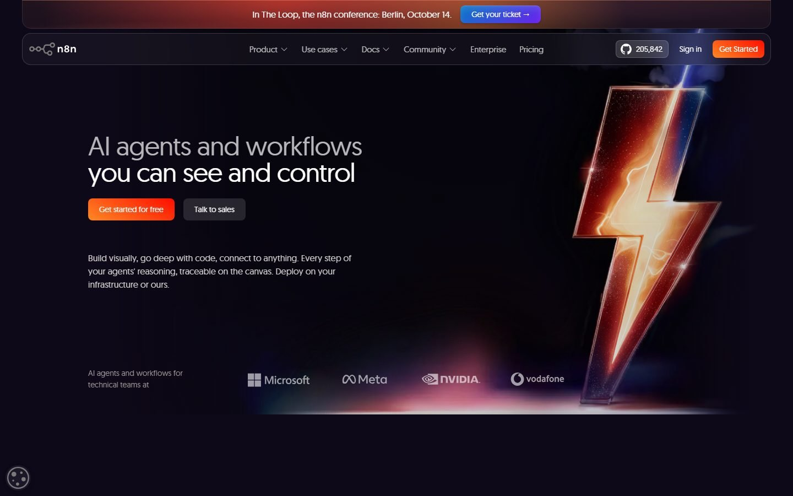
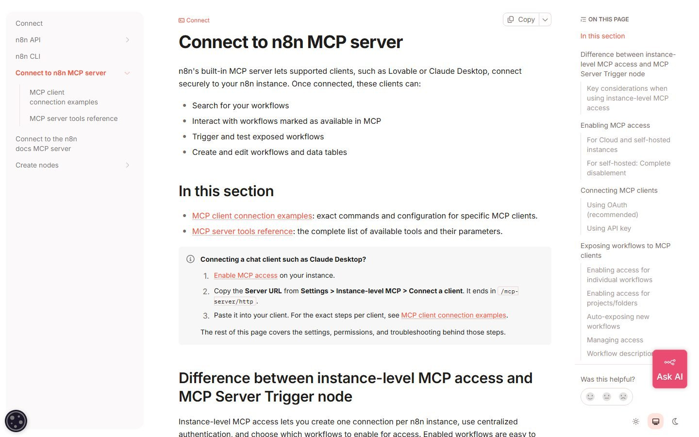

El sistema · 30 min
n8n repite, Claude construye, un agente trabaja para ti. Cómo conectar Claude al MCP oficial de n8n y pedirle el flujo en lenguaje normal, sin armarlo nodo a nodo.

n8n es una línea de producción. Un disparador (llega un correo, un formulario, un mensaje de Telegram, las 8 de la mañana), unas conexiones (tu CRM, tu hoja de cálculo, WhatsApp, Instagram) y unos condicionales (si el pedido supera 200 euros, avisa a Marta). Ejecuta el mismo proceso cada vez, igual. Misma entrada, misma salida. Es determinista, y eso es justo lo que la IA no es.
Por eso n8n y Claude no compiten. La pregunta "¿n8n o Claude?" es la pregunta equivocada. El encuadre que mejor lo resume es el de Erik Taveras (@eriktaveras, septiembre de 2026): n8n repite procesos, Claude Code construye, y un agente residente trabaja para ti. No se sustituyen, se conectan.
| Para qué sirve | Cómo se comporta | |
|---|---|---|
| n8n | Lo que se repite | Mismo proceso cada vez, sin sorpresas |
| Claude Code | Lo que se construye | Vive en la sesión, espera tu prompt, hace lo difícil |
| Un agente residente (Hermes, OpenClaw y similares) | Tu día a día | Sigue trabajando cuando cierras, te escribe él por WhatsApp o Telegram |
Hasta hace poco los flujos de n8n se armaban nodo a nodo, a mano, y ahí se atascaba todo el mundo. Ahora n8n publica un servidor MCP oficial: conectas Claude (o ChatGPT, Cursor, Codex, Gemini CLI) a tu instancia de n8n y le describes el flujo en lenguaje normal. Claude lo crea, lo edita, lo prueba y lo ejecuta desde el chat. Verificado en la documentación de n8n: crear y editar flujos desde el MCP existe desde la versión 2.13.
Con el cerebro de tu empresa delante, además, Claude sabe qué flujo necesitas: lee la nota de tareas, ve que la revisión de campañas se hace cada lunes a mano, y te propone el flujo que la automatiza.
npx n8n y abre http://localhost:5678. Es para trastear, no para producción; para eso, Docker o Cloud./mcp-server/http) y el token.claude mcp add --transport http n8n-mcp https://TU-DOMINIO-N8N/mcp-server/http --header "Authorization: Bearer TU_TOKEN"n8n MCP, URL la del paso 2. Inicia sesión cuando lo pida.Lista mis flujos de n8n. Si te los devuelve, está conectado.
Con el cerebro abierto en la sesión de Claude:
Lee 00_INDICE.md y 08_TAREAS/_tablero.md. Elige la tarea que más se repite cada semana y que no requiere criterio (avisar, copiar, resumir, mover datos). Diseña un flujo de n8n para automatizarla: disparador, pasos, condicionales y a quién avisa. Enséñame el diseño en 6 líneas y espera mi OK. Cuando diga "adelante", créalo en n8n con el MCP, sin activarlo, y dime cómo probarlo.
Ejemplo con Suela Norte: cada lunes alguien exporta las campañas de Meta de la semana, las pega en una hoja y avisa por WhatsApp de las que han bajado de rendimiento. Eso es n8n puro: disparador de horario, leer el CSV, condicional "coste por compra un 30 % peor que la media", mensaje. Claude lo monta; n8n lo repite cada lunes sin que nadie lo recuerde.
Los tres nombres del encuadre (n8n, Claude Code, Hermes) caducan. Lo que no caduca es la división: lo que se repite, lo que se construye, lo que trabaja por ti. Cuando cambien las herramientas, vuelve a esta tabla.
Datos sensibles y RIA antes de conectar nada con datos de clientes. O tu primera skill, para que Claude construya los flujos siempre a tu manera.
Semana de la IA 2026 · Cluster TIC Asturias · 25 de septiembre · Adrián Nicieza, edrian.exe · contacto@edrianexe.com · @edrian.exe
Contenido generado con ayuda de IA y revisado por un humano. Datos de la tienda de ejemplo, simulados.